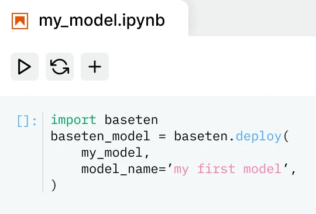
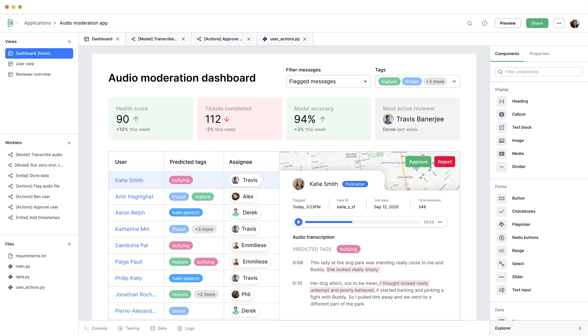
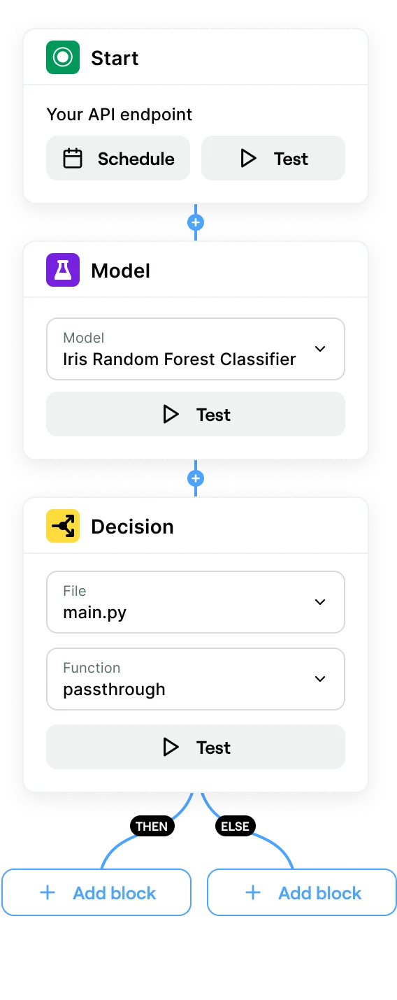
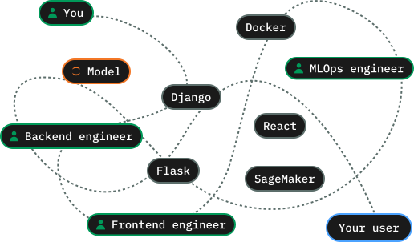
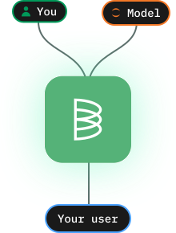
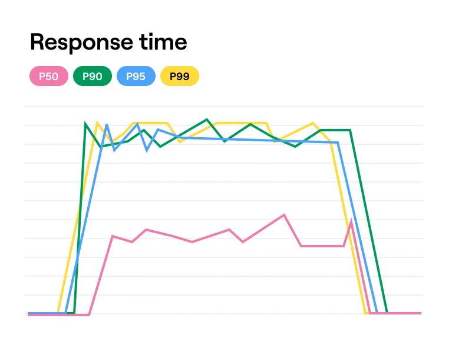
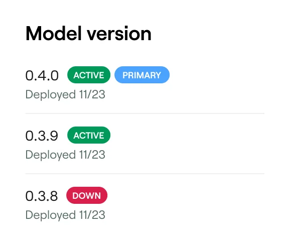
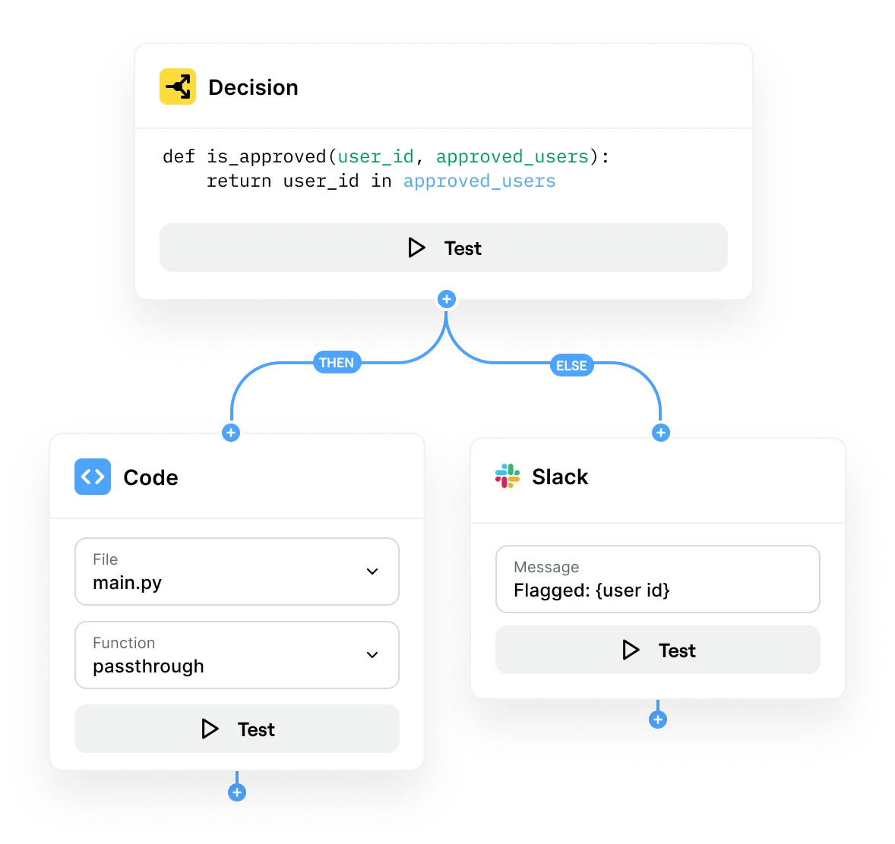
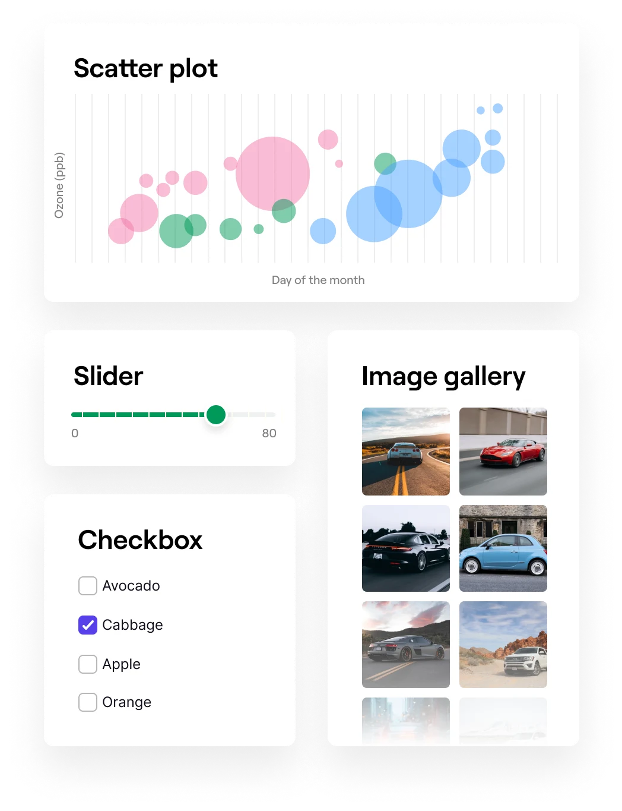

Baseten gives data science teams instant APIs and UI components to build and ship interactive apps that move the business forward.
Get started for free Attend an intro meetupTrusted by top data science and machine learning teams



Baseten simplifies the set-up of backends, frontends, and MLOps, so your models get used faster.
A frustratingly slow process requiring development resources or know-how, resulting in most models never seeing the light of day.

Ship full-stack apps in minutes. Deploy models instantly, automatically generate API endpoints, and quickly build UI with drag-and-drop components.

You shouldn’t need to become a DevOps engineer to get models into production. With Baseten, you can instantly serve, manage, and monitor models with a few lines of Python.



Assemble business logic around your model and sync data sources without the infrastructure headaches.
Drag-and-drop components to create fully-featured UI without learning HTML, CSS, or React.

Instantly publish and share applications for anyone to use. As you iterate, any changes to your model, logic, or UI are automatically updated.
View the galleryServe a fast.ai model behind a REST API endpoint.
View notebookBuild serverless API endpoints with Python.
See howBuild a custom data labeling app with Baseten.
Launch demoConnect and write your models' outputs to S3.
See howServe a Hugging Face model behind a REST API endpoint.
View notebookBuild a human-in-the-loop workflow with Baseten.
Launch demoNikhil Harithas
Senior Machine Learning Engineer at Patreon
Start shipping full-stack apps and driving business outcomes with machine learning today.
Get started for freeAIWeb design, Development